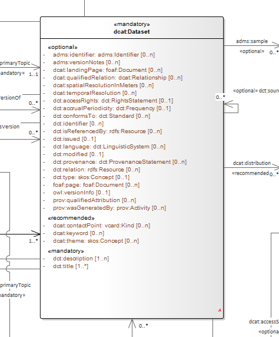

Clarifications on "reuse"
In the Semantic Web literature, the term "reuse" appears very often, encouraging the adoption of data specifications in new data specifications rather than redefining the same/similar concepts once again. The term "reuse" is usually considered in a broad sense, and what it means in terms of specific implementations is often left underspecified. In this section, we aim to address this gap and provide a detailed account of what "reuse" means in the SEMIC context.
What is the reuse of an (ontology or data shape) specification?
Specification reuse is the act of sourcing an established specification into a new one (referred to as the "current" or "own" specification).
Technically, reuse may mean either or both of the following:
-
Importing (using
owl:imports) the contents of another ontology or data shape specification into a current one; OR -
relying on URI dereferencing to get the formal definition of the ontology (this, however, does not work for the data shapes) In the SEMIC context, for the purpose of interoperability, we need to carefully constrain the meaning of the term "reuse" with a fine-grained description on a construct-by-construct basis, and this is the aim of the remainder of this section.
The following subsections offer a systematic description of six cases of reuse based on what is reused: (a) a class or (b) a property, and types of frequently encountered variations: (i) as-is, (ii) with terminological adaptations, and (iii) with semantic adaptations.
In each case, we describe as appropriate the implications on the following aspects:
-
How to denote it: (a) as-is or (b) as a specialisation
-
Label
-
Definition
-
Impact of adding new properties (for classes only)
-
Impact of reusing original properties (for classes only)
-
Impact on domain and range (for properties only)
-
Other constraints and additional information
Reuse of a class as-is
This scenario applies when the original class is reused without terminological or semantic changes.
Reuse Aspect |
Description |
How to denote |
Reuse as-is. Adopt the original URI and its definition. |
Label |
NO change allowed |
Definition |
NO change allowed |
New properties on the class |
In data shapes (SHACL), the class can be used for in domain/range property constraints. In UML, properties are depicted as new connections (object properties) that are incoming and outgoing to the class or as new attributes (data properties) that appear in the class. This works because OWL 2 semantics treats properties as first-class citizens (along with classes, datatypes and individuals). So even if the UML class diagram may visualise new properties on the class, they shall be read as constructs defined separately from one another, just as the OWL 2 specification defines it [owl2]. The properties on the superclasses of the reused class are considered inherited. When introducing new properties, do not duplicate existing ones in the superclass(es). Also, make sure there are no logical contradictions [CS-R5]. |
Original properties on the class as defined in the context of a data specification |
In OWL 2 & SHACL, when reusing a class as-is from an established ontology hereafter called the original, all properties and constraints associated with the class are considered adopted (even if some may be irrelevant). It is recommended to make the reuse of the original clear (by notes, hyperlinks or dereferenceable URIs of the terms) at the class level. In UML, all properties marked as mandatory in the original data specification are considered relevant and shall be depicted. Optional properties may be depicted only if relevant in the new context. The properties on the superclasses of the reused class are considered inherited and may be depicted in the UML diagram as necessary for reuse. |
Reuse of a class with terminological adaptations
This scenario applies when the original class is reused without semantic changes. Still, a label or definition needs to be modified to reflect the meaning in the new context accurately.
Reuse Aspect |
Description |
How to denote reuse |
Reuse as-is. Adopt the original URI and its definition. If the goal of the terminological adaptations is to rely on the specification as provided for the original URI, apply the guidelines of reuse as-is. Add, if necessary, a note to clarify this. Creating a sub-class that captures the adaptations is recommended as the safe option. |
Label |
Changes to the label are NOT recommended. Some exceptions may be accepted in the case of close synonyms, yet the meaning/semantics must stay the same. Differentiation through using preferred and alternative labels is a strong recommendation and should be implemented as described below. In UML, - the new label is indicated in the UML Element Name (in CamelCase, no spaces, to provide visibility for the User Community of the Model) - the (original) URI of the reused class shall be indicated (e.g. in a UML Element Tag) - the original label of the reused concept shall be preserved (e.g. in a UML Element Tag + a marker that special name management shall take place) In OWL 2,
- the original label is adopted as is (e.g. either In the documentation, - the new label displayed as the main label (in titles and any other fronting) - the original label (to be visibly mentioned) |
Definition |
NO change allowed Any scoping or nuancing provided in the original data specification should be copied.
In addition, new scoping or nuancing shall be provided in the scope notes (e.g. |
New properties on the class |
Same recommendation as for reusing the class as-is |
Original properties on the class |
Same recommendation as for reusing the class as-is |
Example
For example, the wording of FOAF definitions can benefit from light adaptations and adjustments, yet the meaning is not changing. Hence, in Core Person Vocabulary, the definitions are slightly adjusted. Such adaptations might be made when the original label or definition does not follow the guidelines laid out in this document. For example, the one on circular definitions [GC-R5].
Reuse of a class with semantic adaptations
This scenario applies when the original class is reused with semantic changes, which also implies terminological adaptations.
Reuse Aspect |
Description |
How to denote reuse |
Must reuse as a specialisation. Must create a subclass that captures the adaptations and indicate reuse by the subclass relationship. If the reused class is itself a specialisation of a third specification, then both shall be explicitly mentioned. In general, we shall show the whole reuse chain (in the conceptual model and especially in the documentation via notes and hyperlinks). |
Label |
Provide a new label that is more specific than the one in the reused class |
Definition |
Provide a new definition that is more specific than the reused class |
New properties on the class |
Add new properties as necessary on the new (owned) sub-class. The properties on the superclasses of the reused class are considered inherited. When introducing new properties, do not duplicate existing ones in the superclass(es). Make sure there are no logical contradictions [CS-R5]. |
Original properties on the class as defined in the context of a data specification |
When reusing a class as-is from a data specification, hereafter called the original, all properties and constraints associated with the class should be adopted. In UML, include all properties and constraints in the UML diagram if marked as mandatory in the original. For the sake of brevity, optional properties and constraints can be omitted. The properties on the superclasses of the reused class are considered inherited and may be depicted in the UML diagram as necessary for the purpose of reuse. If a reused original property must be made more specific or nuanced, then it is a good idea to create a sub-property of the already existing one. See property reuse recommendations below. |
Example
For example, in the Core Public Organisation Vocabulary, the reused class org:Organisation is specialised as
cv:PublicOrganisation.
Reuse of a property as-is
This scenario applies when the original property is reused without terminological or semantic changes.
Reuse Aspect |
Description |
How to denote reuse |
Property as-is. Adopt the original URI and its definition. |
Label |
NO change allowed |
Definition |
NO change allowed |
Domain and range |
If the reused property * does not define a domain and range (in the original ontology) AND * its definition does NOT mention explicit restrictions on the domain and range (in the data shape) then it can be attached in UML diagrams (in the owned data specification) to any class either as a) a relation (pointing to another class) or b) as an attribute with a specific datatype. If the reused property * defines a domain and range (in the original ontology) OR * its definition DOES mention explicit restrictions on the domain and range (in the data shape), then it must be reflected in the UML diagrams (in the owned data specification) accordingly, i.e. it can be applied only on specified classes. When UML is transformed into other representations, it is not recommended to represent the domain/range definitions in the lightweight ontology (OWL 2). Still, it may be reflected in data shape definitions (SHACL) as constraints. When the UML is transformed into other representations, the inclusion of domain/range statements is dependent on the "reuse" intention of the data specification. In case of a broad reuse intention, as for the SEMIC Core Vocs, it is not recommended to include them in the lightweight ontology but better reflect them as constraints in SHACL, where necessary (i.e. optional properties can stay free of domain/range specification) [CS-R2]. Note: in the case of narrow reuse intention, as for the application profiles, it is recommended to provide domain/range constraints in the data shape definitions (using SHACL) even if those are optional. |
Other constraints and additional information |
When reusing a property as-is from a data specification, then all constraints associated with the property should be adopted. It is recommended to make the reuse of the original clear (by notes, hyperlinks or dereferenceable URIs of the terms) at the class level. In no way should the UML contain conflicting constraints compared to the original data specification. When the UML is transformed into other representations, the lightweight ontology may be augmented with descriptive information, while (logical) constraints are to be expressed as SHACL. |
Reuse of a property with terminological adaptations
This scenario applies when the original property is reused without semantic changes. Still, a label or definition needs to be modified to reflect the meaning in the new context accurately.
Reuse Aspect |
Description |
How to denote the reuse |
Property as-is. Adopt the original URI and its definition. If the goal of the terminological adaptations is to rely on the specification as provided for the original URI, apply the guidelines of reuse as-is. Add, if necessary, a note to clarify this. Creating a sub-property that captures the adaptations is recommended as a safe option, however. If the reused property, is itself a specialisation of a third specification, then both shall be explicitly mentioned. In general, we shall show the whole reuse chain (in the conceptual model, and especially in the documentation via notes and hyperlinks). |
Label |
Changes to the label are NOT recommended. Some exceptions may be accepted in the case of close synonyms, yet the meaning/semantics MUST stay the same. We strongly recommend differentiating between preferred labels and alternative labels and should be implemented as described below. In UML, * the new label is indicated in the UML Element Name (in CamelCase, no spaces, to provide visibility for the User Community of the Model) * URI of the reused property shall be indicated (e.g. in a UML Element Tag) * the original label of the reused concept shall be indicated (e.g. in a UML Element Tag + a marker that special name management shall take place) In OWL 2, * original label (as is, either rdfs:label or * new label (as an alternative label, In the documentation, * original label (to be visibly mentioned) * new label (in titles and any other fronting) |
Definition |
Changes are NOT allowed. Any scoping or nuancing provided in the original data specification should be copied. In addition, new scoping or nuancing shall be provided in the scope notes (e.g., skos:scopeNote ). |
Domain and range |
Same recommendation as for reusing property, as is |
Other constraints and additional information |
Same recommendation as for reusing property, as is |
Example
For example, in DCAT-AP the reused property adms:status is relabeled from "status" to "change type" for Catalogue Record class. Note
that the diagram does not reflect this, but it is reflected in the associated documentation.

Reuse of a property with semantic adaptations
This scenario applies when the original property is reused with semantic changes, which also implies terminological adaptations.
Reuse Aspect |
Description |
How to denote the reuse |
Must create a sub-property that captures the adaptations. In UML, a connector is created denoting a new property, which specialises another connector denoting the original property. Additionally, notes or hyperlinks shall be provided to the original source. |
Label |
Provide a new label that is more specific than the one in the reused property |
Definition |
Provide a new definition that is more specific than the one of the reused property |
Domain and range |
If the reused super property does NOT define domain/range, then it is possible to add domain/range specifications to the sub-property, but only if justified and absolutely necessarily. In UML, feel free to attach it anywhere needed. If the reused super property DOES define a domain/range, DO not override them, i.e. do not specify a new domain/range that leads to logical inconsistencies. Specifically, if you do that, then make sure that the new Domain is a subclass of the Original Domain. If the property is used across multiple classes multiple domain/range specifications can be deemed appropriate. This shall be handled with care. Multiple domain/range definitions in OWL 2 mean intersection (i.e. joined by logical AND) and not the union (i.e. joined by logical OR), as most use cases may require. When the UML is transformed into other representations, the inclusion of domain/range statements is dependent on the "reuse" intention of the data specification. In case of a broad reuse intention, as for the SEMIC Core Vocabularies, it is not recommended to include them in the lightweight ontology but optionally reflect them as permissive constraints in SHACL. In case of narrow reuse intention, as for the Application Profiles, it is recommended to provide domain/range specifications in the data shape definitions even if those are optional. |
Other constraints and additional information |
Feel free to provide any additional information that is deemed necessary. When the UML is transformed into other representations, the lightweight ontology may be augmented with descriptive information, while (logical) constraints are to be expressed as SHACL. |
Example
For example, in the DCAT-AP the reused property dct:hasPart is specialised as dcat:dataset. Note that the subproperty
relation between the two is not depicted in the diagram, but is stated in the data shape specification.
